PeNNdulum
Comparing Reservoir Computing, Lagrangian, and Hamiltonian Neural Networks' Forecasts of Chaotic Systems in Physics
Pomona College CS
Nathan Paik, Guy Thampakkul, Tai Xiang, Ziang Xue
1. Introduction
Lagrangian neural networks (LNN) output the Lagrangian for a system in motion. The Lagrangian characterizes the total energy in the system, and is a useful tool for solving for the mechanics of a system where a wider and more general range of dynamics are needed. The LNN was developed for extremely physics-specific tasks, and this makes it relatively narrow in scope. We seek to explore if the LNN is capable of outperforming a more general-purpose neural network that is highly successful at predicting the behavior of chaotic systems, Reservoir Computing (RC), the long-short term memory neural network (LSTM), which is excellent at forecasting sequential tasks, as well as a baseline fully-connected neural network model (FC).
The task we will be using for comparison is the mechanics-based problem of forecasting the motion of a chaotic double pendulum. To verify this, we will train these networks on a dataset that is the analytical solution of a double pendulum over time. If RC and LSTM outperforms the physics-specific network, the LNN, then the utility of these networks substantially decreases. However, in this case, we expect LNN to surpass RC and LSTM, as the most common mathematical way to solve for the equations of motion for a double pendulum is by first solving the Lagrangian. Furthermore, we expect the LNN to yield better results than both RC and LSTM as its output has been proven to abide by the laws of physics and conserve energy, whereas RC and LSTM may not necessarily yield outputs that fall within physical constraints.
To get an understanding of the performance of each of these neural networks against a more common baseline model, we will also be comparing all three of these models against a generic feed-forward network that will serve as the control.
Finally, to test the validity of each model on new data, we will test each model on a set of simulated data, giving them each the same initial conditions. We can then both quantitatively and qualitatively evaluate how each model does to get a better understanding of their respective strengths and weaknesses.
1.1 The Double Pendulum
We choose double pendulum forecasting as our task as it is a dynamical system that is governed by a set of ordinary differential equations that yield substantial chaos. The system consists of a single pendulum with another one attached to the first pendulum's end.
From the above videos, we observe that slight differences in the initial conditions of the system result in drastically different paths and trajectories. This makes the system extraordinarily hard to forecast, for slight deviations in path result in substantial error. We can observe this in the equations of motion, which are reached through a derivation with the Lagrangian:
$$\ddot{\theta_1} = \frac{-m_2cos(\theta_1 - \theta_2)l_1 \dot{\theta_1}^2sin(\theta_1 - \theta_2) + m_2cos(\theta_1 - \theta_2)gsin(\theta_2) - m_2 l_2\dot{\theta_2}^2sin(\theta_1-\theta_2)-(m_1+m_2)gsin(\theta_1)}{l_1(m_1+m_2-m_2cos^2(\theta_1 - \theta_2))}$$
$$\ddot{\theta_2} = \frac{(m1+m2)[l_1 \dot{\theta_1}^2 + \frac{\dot{\theta_2}^2sin(\theta_1 - \theta_2)cos(\theta_1 - \theta_2)m_2l_2}{m1+m2} + cos(\theta_1 - \theta_2)gsin(\theta_1) - gsin(\theta_2)]}{l_2 (m_1 + m_2 sin^2(\theta_1 - \theta_2))}$$
where $\theta_1$ and $\theta_2$ describes the angles created between the pendulum arms and the vertical plane, $m_1$ and $m_2$ describe the masses of the first and second pendulum respectively, and $l_1$ and $l_2$ describe the arm lengths of the first and second pendulum directly. Observing the exponential terms in both equations, it can be inferred that any error will propogate through the system at a large scale, making accurate forecasting of the path to be quite difficult.
2. Related works
Similar works on chaotic systems and the double pendulum have been done. Klinkachorn and Parmar at Stanford characterized the performance of neural networks on double pendulums as the starting angle between the two pendulum arm's began to vary. However, they tested a range of machine learning algorithms and models, including linear regression, autoregression, feed-forward neural networks, and long-short term memory networks. Rudy et al. also demonstrated a novel method to train models that sought to fit dynamical systems on noisy data and compared increasing levels of variance that arose when a neural network was used to predict an increasingly noisy double pendulum input.
Although sharing multiple similarities, our work differs in that we seek to test models that hypothetically ought to perform quite well on this task. The simple fully-connected network is simply used as a baseline instead of as the most advanced model, Furthermore, we extend upon prior work by testing LNN, LSTM, and RC, which are all models that have advantageous aspects for forecasting a double pendulum system.
Although sharing multiple similarities, our work differs in that we seek to test models that hypothetically ought to perform quite well on this task. The simple fully-connected network is simply used as a baseline instead of as the most advanced model, Furthermore, we extend upon prior work by testing LNN, LSTM, and RC, which are all models that have advantageous aspects for forecasting a double pendulum system.
3. Methods
3.1 The Dataset
The dataset used for training is a double pendulum simulation dataset that generates a sequence analytical solutions to the double pendulum problem given an initial condition. This is done computationally and represents the ground truth solution that is derived through the double pendulum's equations of motion. Initially, we planned on building our own dataset with some computer vision code and a double pendulum setup provided by Pomona College Physics Department to test our trained networks on noisy systems (real world double pendulum), however we did not have time to complete this task. The IBM double pendulum dataset used in the beginning of the project also proved to be unsatisfactory. It consists of only coordinates from images, which were difficult to parse and expand upon. Eventually we decided to use the generated analytical dataset. However, the IBM dataset can be put into use in future extension of this project (See future extension section for details.) The simulated dataset, the IBM dataset, and computer vision dataset will provide us with data on the same system with increasing levels of noise.
To generate the simulation dataset, we simply solve the equations of motion for the double pendulum and generate positions for a range of timesteps. This is done by using the Runge-Kutta RK4 integration method to step through small timesteps and generate each analytical next step.
The dataset consists of 300 time series, each containing 1500 timesteps worth of sample, or "frames". An example of a frame is: [3*np.pi/7, 3*np.pi/4, 0, 0]. The first two entries are the angle formed between the two arms of the pendulum and the vertical line, the second two entries are first order derivatives of angular velocity. Each model supports different sample-label pairing: FC, LSTM and LNN use a 4-to-1 frame pairing (4 frame as input, the following frame as label), and the ESN uses a sequence-to-sequence pairing (the first 1499 ([0:-1]) frames as input, the last 1499 frames ([1:]) as label.
Prior to training, the pendulum track data are generated by the dataset notebook, and the train / test datasets are stored in pickle files. The sample size is 300 sequences of 1500 timesteps, and the initial conditions are generated randomly, conforming to a uniform distribution. Verifying samples are generated on-the-go, since we would want to verify our model on any potential sequence. For our evaluation and cross-model comparison, the same initial values are used: [3*np.pi/7, 3*np.pi/4, 0, 0]
3.2 Training and Optimization
We trained and optimized a baseline fully-connected neural network (FC), a long-short term neural network (LSTM), an echo state network (reservoir computing, RC), and a Lagrangian Neural Network (LNN).
We used PyTorch to implement and train the FC and LSTM networks, and we iterated through a multitude of learning rates and batch sizes to discover the optimal hyperparameters for each model. This was done with Tensorboard.
We used ReservoirPy to implement and train the ESN network (ReservoirPy is a library on github based on Python scientific libraries used as a tool to help implement efficient RC neural networks, specifically ESNs). In the process of exploring ESN libraries, we also looked at "easy-esn", "pytorch-esn", or "EchoTorch". To optimize the ESN, we iterated through a multitude of ESN-based hyperparameters including leak rate, spectral radius, input scaling, regularization, and forecast and found the optimal settings.
LNNs differentitated from these models quite a bit. These are far more physics and mathematics intensive and are instantiated differently from the afformentioned models. Our LNN is constructed from scratch using existing examples online and on github. The power of the Lagrangian arises from its loss function, and instead of a typical MSE loss, we give it a loss function that is the partial derivative of both the equations of motion and the Lagrangian. This work relied heavily on Miles Cranmer et al.’s paper and github repo on LNNs with dependencies on more mainstream Python libraries including Jax, NumPy, MoviePy, and celluloid, with the latter two used for visualization purposes.
An overview of the models are shown below:
| Name | Hyperparameters | Epochs/Iterations |
|---|---|---|
| Baseline FC | batch = 32; lr = 0.01 | 5 epochs |
| LSTM | batch = 256; lr = 0.01 | 10 epochs |
| RC | leakrate = 0.1; spectralradius=25;inputscaling=0.5;regularization=1e-7;t=1 | 36 epoch |
| LNN | batch=100; lr=0.001 | 15,000 iterations |
For analysis, we created a ground-truth graph that consisted of the analytical path of a double pendulum given an initial condition. We compared this theoretical path with our network-generated paths to get a clear visual representation of how the different networks perform. We also plotted the differences in predicted angles and analytically calculated angles, as well as the distance between pendulum endpoints for the predicted cartesian coordinates and analytical cartesian coordinates. MSE errors are used only to compare FC, LSTM or ESN performances under different hyperparameters, but not across models. Traditionally, F1 score, accuracy, precision, recall, etc. would be considered in the evaluation of model performance, but due to the nature of error propogation for the double pendulum, these metrics are not a good grounds for the latter kind of comparison.
4. Discussion: Results and Network Comparisons
To compare these 3 networks, we looked at validation loss and accuracy, and comparing how well they perform on the analytically generated testing set. We also perform quantitative comparisons on videos we render from the frames of predictions and analytical solutions.
4.0 General Overview
We observe the predicted trajectories of each of the models overtime as well as an analytically solved solution:
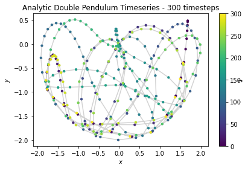 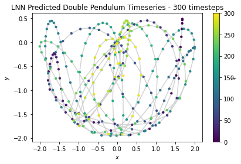  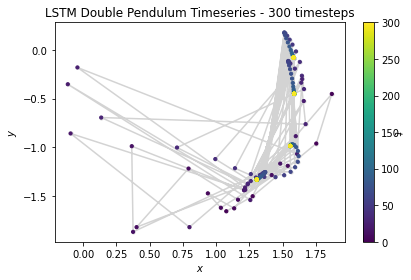
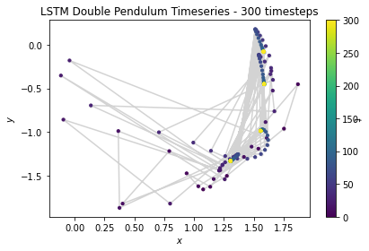 
We can also visualize each of these positions continuously in a video:
 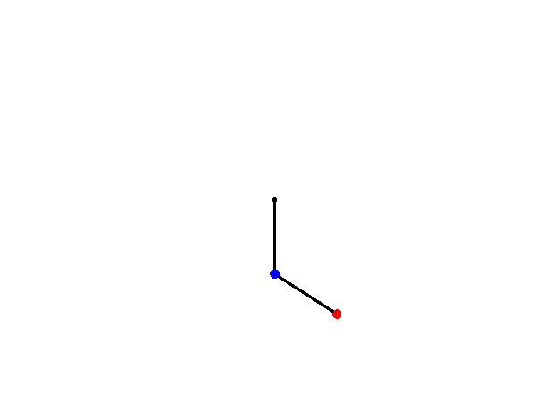
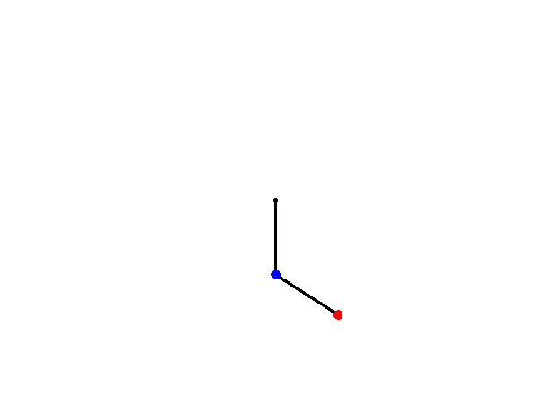


From the video, one clear advantage of the LNN in the case of this system is its preservation of physics. Though the path traced does not perfectly align with the analytical solution, the LNN conserves energy in the system, and the total amount of potential and kinetic energy are balanced accordingly. However, the ESN does not abide by the laws of physics, and tends to move about randomly and disobey gravity as well as conservation of energy.
From this broad overview, it is quite obvious that the LNN seems to match the analytical solution the most, while the ESN completely departs from the analytical solution. Meanwhile, the FC network barely moves, and its movements are basically undetectable in video.
Taking a look at difference between the distance between x and y positions of the analytical solution and each model prediction, as well as the difference between the angles produced by the analytical solution and the model predictions, we see the following:
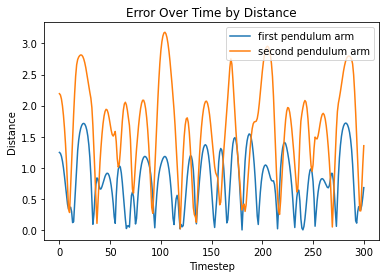  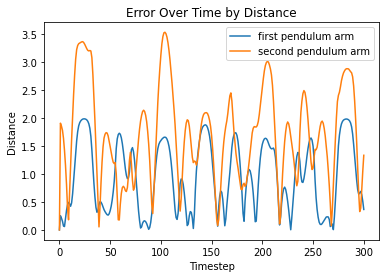 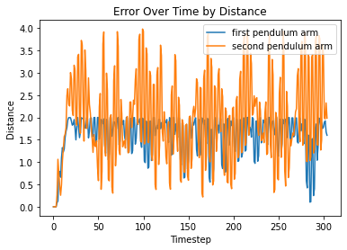
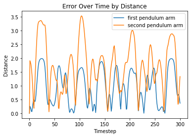 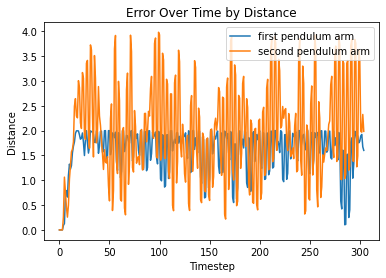
Top Left: FC, Top Right: LNN, Bottom Left: ESN, Bottom Right: LSTM
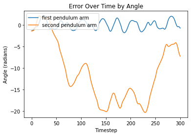 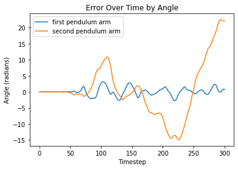 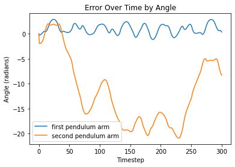 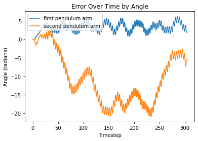
Top Left: FC, Top Right: LNN, Bottom Left: ESN, Bottom Right: LSTM
Visualizations of error report large differences between analytical solutions and model predictions for both models. Since the double pendulum is a highly chaotic system, any small error in the system will propogate over time, rendering all later predictions to be somewhat different from the analytical solution.
4.1 Baseline Fully Connected
The fully-connected model consists of the input and output layers, three (32, 32) linear layers, each with ReLu activation functions a sigmoid activation function at the output. The baseline fully-connected model is the worst model for the task. Rather than actually predict the path, it remains in the initial condition and tends to not move from it. We postulate that this is due to the fact that the model is unable to learn a consist way to learn the dynamics of the double pendulum, and finds the best way to reduce loss to be through guessing the initial point over and over again.
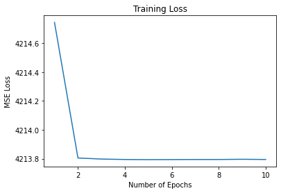
From the above figure, we see that this prediction is supported by the fact that regardless of tuned hyperparameters, training loss seems to decrease negligibly at first, and then remains the same at all other epochs. This baseline fully-connected model validates the assumption that this task is an incredibly difficult one to forecast, and without the innovations of sequential memory, reservoirs, or modification to loss functions, it is the worst of the bunch.
4.2 LSTM Model
We note that the LSTM performs better than the baseline FC, but it still does not do very well. With a 3 layer LSTM model with decreasing hidden layer sizes [32, 16, 8], we train over 10 epochs on 1500 generated analytical samples. An example trial of generation looks like this:


Although the model learns the spirit of a "chaotic system", it does not really learn the pattern. The outputs are far off from target, and does not even show a similar pattern of motion.
Also, the training statistics shows severe overfitting of the data:

We see that over time, the training loss decreases as we expected, but when we validated the model using other simulated data, it does not show similar decrease, hence we can conclude that overfitting happened.
Altering the learning_rate does not seem to solve the problem.
4.3 LNN Model
The LNN model demonstrates an accurate prediction of the pendulum for the first few prediction frames, but once error occurs, the error propagates quickly throughout the system and make the prediction unreliable. For single frame predictions however, we still witness reasonable loss decrease over the course of training:
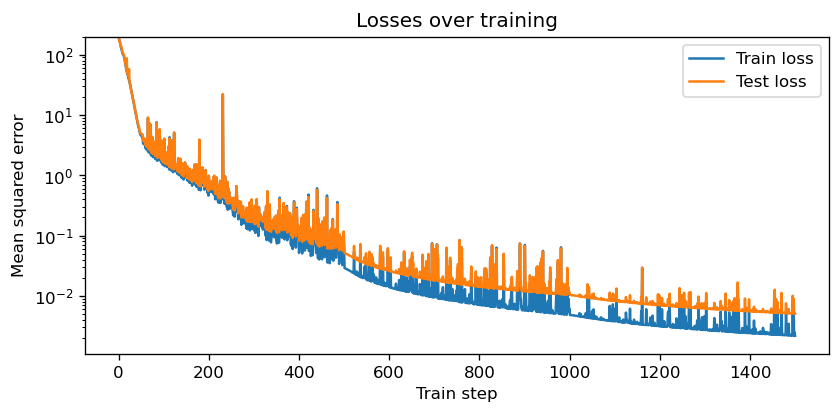
LNN prediction seems to follow the actual physical rules and conserve energy and momentum while making the prediction, which is a virtue most neural networks lack.
4.4 ESN Model
Our ESN model takes as input the triangular functions of the angles formed by the arms and the vertical. The key hyperparameters for our network are as follows:
leak_rate = 0.1 #Decides the "memory size". higher value -> shorter memory
spectral_radius = 25.0 #Higher values -> chaotic system
input_scaling = 0.5 #Smaller (-> 0) -> free behavior, larger (-> 1) -> input-driven
regularization = 1e-7 #ridge optimization parameter.
forecast = 1 #use the next following frame as label.
The ESN trains on entire time series and use the same series (but one frame later) as label. The network turns out to be extremely inaccurate in learning and predicting the movement of the end joint of the double pendulum.
When we train the model, we noticed that there are 3 sample sequences that induced extremely high MSE error. To protect the network from such "pollution", we had to remove these 3 sequences by hand.
Oddly, the prediction accuracy does not depend on the size of the training data. We first trained the ESN on each sample sequence, tested the prediction error (MSE), and then reset the model to untrained state. We then trained another model on the entire dataset (40 sequence) without reset. Figure 1(a) shows the MSE with/without resetting. Figure 1(b) compares the errors from the two models.
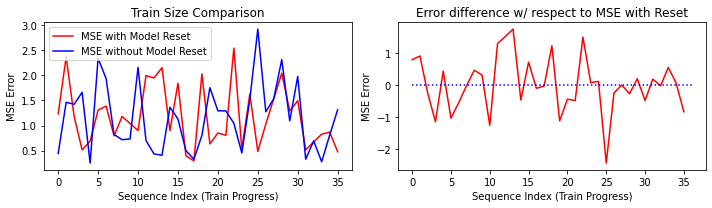
We see from the figures that the MSE loss are relatively similar for both the resetted and non-resetted model, which implies that size of training data has little influence on model precision. This could be due to the limited "memory" for an ESN network. When training on large dataset, new incoming data takes away memory space of the network and make it "forgets" earlier inputs that it has already learned.
We know that this anomaly in learning is not due to the specific sequence we tested the ESN upon. The sequences varies in their difficulty to train, but the the difference is within range of the error predicting one sequence can produce. This is shown in figure 2
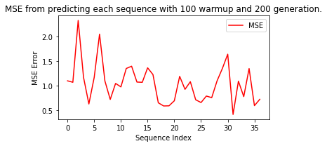
Changing the leak_rate parameter for a longer term of memory will alter the effect of training size. We trained 2 new models with leak_rate=0.05 and leak_rate=0.01, and compared it with the previous leak_rate=0.1 model. We use the following formula to look into the the variation between resetting and not resetting the model:
$Diff = MSE_{No\ reset}-MSE_{Reset}$
The results is shown below: 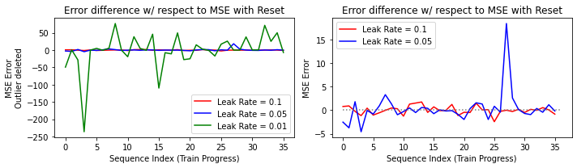
We see that extremely small leak_rate induces significantly larger MSE difference both above and beyond 0, which means it is highly unstable. Comparing 0.05 and 0,1, we find that lowering leak_rate results in difference mostly below 0, which means that larger training size generally gives smaller error. However, this case is not entirely stable as there are instances where larger training dataset induced significantly high error.
Another way we can see the ineffectiveness of larger training data is that, in the no resetting case, our $x$ axis can be treated as time passed. Using this formalism, we see that the MSE does not shown any decrease over time (see fig 1a).
The discussion above shows how the ESN model is not making entirely valid predictions. Our main assumption is that the motion of the double pendulumn is overall circular. When more data is fed into the network, it only learns circular motion. When less data is fed in, there is either not enough data to learn from, or only local linear movements are learnt. The latter case also explains why sometimes the prediction gives a linear trajectory that goes way beyond reasonable value -- It could have learnt a linear trend instead of a circular one.
4.5 Conclusion
We observe that no single model is exactly accurate in the prediction of the double pendulum path. The main reason behind this discrepancy is that the double pendulum is a second order system, and thus error propagates throughout the system quickly. When this is combined with the instability of neural networks, making accurate prediction becomes extremely difficult.
Pure accuracy and metrics aside, we observe that from a broad perspective, the LNN is clearly the best model of the bunch. It is capable of preserving the total energy of the system, and qualitative analysis from the rendered videos reveals that its path is the most realistic and timesteps are not discontinuous. On the contrary, the ESN and LSTM both oscillate and move randomly at times, and there appears to be extreme discontinuity between timesteps. They tend to not abide by the law of physics, and appear to be incapable of discovering any physical laws with the given training set. The baseline model is the worst out of the bunch, and cannot capture any information on system dynamics.
5. Ethical Implication and Discussion
A possible ethical issue in this instance is the use of overideal training data. We trained these models on a simulated double pendulum dataset that yields the exact future points by solving differential equations. However, double pendulum systems in our physical world are not this ideal, and sources of noise such as air resistance, friction in the system, and micro-oscillations that are passed through the frame alter the actual path of the double pendulum. Though these models are capable of forecasting new systems based off of simulation, it is unclear if they will perform at the same level when given a noisier system that contains multiple variables that do not appear in the simulated dataset.
This ethical implication has far reaching issues in multiple areas. If a trained model is only able to operate in the space of clean data, then in certain edge-cases or uncommon cases, the model will experience a high error rate. This is especially alarming in areas such as facial or speech recognition, where there may be high amounts of variation in the noisiness of images or audio, and error may result in a range of consequences from inconvenience to life-changing.
6. Reflection
There are multiple things that we could have done better throughout this project.
First of all, we should have reached out to authors and researchers in the earlier stage for help. Initially, we were unsure of how responsive they would be, but after we contacted them it turned out that they were excited to have people working on extensions to their projects. If we reached out earlier, we would have wasted less time and resources. We also should have started training our networks earlier so we would have more time to make adjustments and tune our hyperparameters more. Furthermore, we did not use a massive dataset to train models, thus making results less representative.
The consistency of comparison across models could also have been improved if we had more time to tune hyperparameters and test various optimization techniques. Some of the models are optimized in differing levels of rigor. The LNN hyperparameters were optimized by the researchers who developed them, the ESN had its hyperparameters fully iterated through, while the LSTM and FC were only optimized on batch size and learning rate. This leaves the question of whether models performed better because they were actually better or if certain models had better performance simply because they were better optimized.
Another important programmatic convention we learnt from this project is standardization. Oftentimes, we had to convert files or data as different coders had different styles and different ways of doing things. We also wasted time as oftentimes coders would unknowingly re-implement methods that others had already written. Much of this could have been avoided with better standardization and better communication as well as commenting.
There are multiple ways to further extend this project. The first extension would be to implement a Hamiltonian Neural Network and compare it against our existing models. It would be especially interesting to see how it performed against the LNN as they are both physics oriented. Another extension is the use of varied testing sets. We ran out of time during this project, but we would like to examine the performance of these models on the real-world IBM double pendulum dataset as well as an extremely noisey double pendulum dataset that we generate with our own Pomona College double pendulum.
Reference
Asseman, A., Kornuta, T., & Ozcan, A.S. (2018). Learning beyond simulated physics.
Cranmer, M., Greydanus, S., Hoyer, S., Battaglia, P., Spergel, D., & Ho, S. (2020, July 30). Lagrangian neural networks.
Bollt, E. (2021, January 4). On explaining the surprising success of reservoir computing forecaster of chaos? The universal machine learning dynamical system with contrast to VAR and DMD. American Association of Physics Teachers.
Klinkachorn, S., & Parmar, J. (2019). [Evaluating Current Machine Learning Techniques On Predicting Chaotic Systems CS](http://cs229.stanford.edu/proj2019spr/report/38.pdf). Rudy, S.H., Kutz, J.N., & Brunton, S.L. (2019). [*Deep learning of dynamics and signal-noise decomposition with time-stepping constraints*](https://www.sciencedirect.com/science/article/pii/S0021999119304644). J. Comput. Phys., 396, 483-506.Shinbrot, T., Grebogi, C., Wisdom, J., & Yorke, J. A. (1992, June 1). Chaos in a double pendulum. American Association of Physics Teachers.
Woolley, Jonathan W., P. K. Agarwal, and John Baker. Modeling and prediction of chaotic systems with artificial neural networks. International journal for numerical methods in fluids 63.8 (2010): 989-1004.
Zhang, H., Fan, H., Wang, L., & Wang, X. (2021). Learning Hamiltonian dynamics with reservoir computing. Physical Review E, 104(2), 024205.
Lutter, M., Ritter, C., &; Peters, J. (2019, July 10). Deep lagrangian networks: Using physics as model prior for deep learning.
Greydanus, S., Dzamba, M., & Yosinski, J. (2019, September 5). Hamiltonian neural networks.
Lutter, M., Ritter, C., & Peters, J. (2019, July 10). Deep Lagrangian Networks: Using Physics as Model Prior for Deep Learning
github pages/codes
- https://greydanus.github.io/2019/05/15/hamiltonian-nns/ (pages)
- https://github.com/greydanus/hamiltonian-nn (code)
- https://github.com/MilesCranmer/lagrangian_nns (code)
- https://greydanus.github.io/2020/03/10/lagrangian-nns/ (pages)
- https://github.com/MilesCranmer/lagrangian_nns (code)